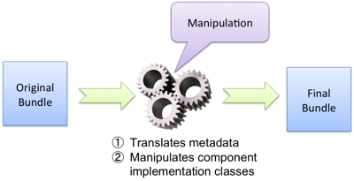
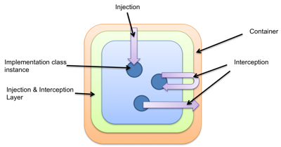
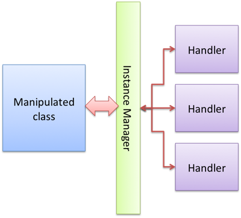
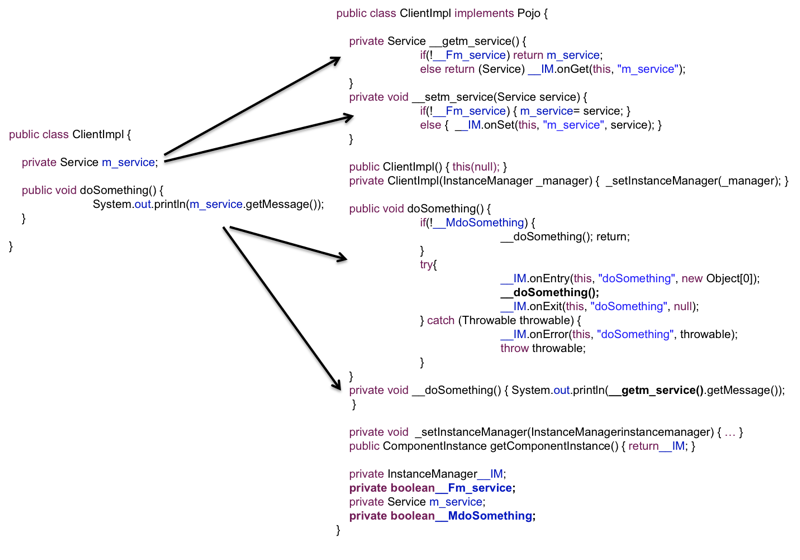

Dive into the iPOJO Manipulation depths
iPOJO (primitive) components are managed using byte code manipulation. Don't be afraid, you don't have to be fluent in byte code to understand components. This page explains how the manipulation works and how your class file is transformed. This manipulation takes care to NOT change the behavior of the manipulated class.
Why manipulate bundle byte code?
The iPOJO byte code manipulation goals are two-fold:
- Preparing classes to be managed at run time and
- Translating XML or annotation metadata into an internal format to avoid run-time XML and annotation parsing.

iPOJO follows a container approach and more specially employs inversion of control and [dependency injections|http://en.wikipedia.org/wiki/Dependency_injection]. The iPOJO container manages component instantiation and injection (service, properties and so on...). To inject values and supervise the execution inside component implementation class, iPOJO uses an interception and injection framework. To facilitate this, iPOJO uses class byte code manipulation.

Besides manipulating byte code, iPOJO translates the XML or annotation metadata to an internal syntax. This eliminates any run-time dependencies on the particular metadata format.
How bundle byte code is manipulated
For each class used as a component implementation class, the manipulation process prepares the class to be managed at run time. This means providing the ability to intercept methods and field accesses. This manipulation is independent of the component metadata. A component class will always result in the same final manipulated class, regardless of its metadata. This means it is possible to use a class as the implementation of several component types. As illustrated in the following image, the manipulated class instance interacts with an instance manager that delegates to handlers. The metadata impacts the set of handlers; it does not impact the manipulated class, nor the instance manager (which is the iPOJO container foundation).

The following image explains what happens during the manipulation.

First, each manipulated class implements the POJO interface. This interface introduces a method to get a reference to the instance container. So, you can detect whether an object is managed by iPOJO by checking if the object implements this interface. A special field, named \*\*IM is injected, which contains a reference to the instance container object (InstanceManager at run time.
For each field, getter and setter methods are generated. They are called \*\*get$FIELD*NAME and \*\*set$FIELD*NAME. A boolean field is injected named \*\*F$FIELD_NAME. This flag enables or disables the container delegation for this field. When delegation is disabled, the field is managed as a regular field: getter and setter methods just return and set the field value. When delegation is enabled, the field never receives a value, the container stores the field value. The getter method asks the container to get the value. The setter method asks to the container to update the stored value. All the field accesses (except ones from specific constructors) of the class are adapted to call the getter or the setter method.
In order to intercept methods, each method is substituted by a generated method. Each method is renamed to \*\*METHOD_NAME and becomes private. The original method is replaced by iPOJO code. This code allows method interception. As with fields, method delegation is enabled or disabled by an injected boolean field. If the method is not to be intercepted, the iPOJO-generated method just calls the original method. Otherwise, the iPOJO-generated method notifies the container of method entries, exits, and potential errors.
Finally, the constructors are also manipulated. Empty constructors and constructors receiving a BundleContext object are manipulated as others methods. However, they receive another argument: the InstanceManager. This instance manager is set just after the call to the super constructor. While setting the instance manager, all flags enabling/disabling delegation are set. This allows the component to use injected values inside the constructor code itself. Constructors receiving other kind of arguments are not manipulated, and so can be used to create non-managed instance. In this case, fields won't be delegated, and methods won't be intercepted.
The annotation special case
The manipulation has a special behavior when a visible (at run time) method or constructor annotation is detected. As the methods are replaced by private methods, the annotations are moved to the iPOJO-generated methods, such as in:
public class MyClass { @MyAnnotation public void myMethod() { //my code here } }
is transformed into:
public class MyClass { @MyAnnotation public void myMethod() { // iPojo code here } private void _myMethod() { // my code here }
Avoiding XML at run time
iPOJO does not use XML or annotations at run time. The manipulation process replaces the XML or annotation metadata by an internal format (between LISP and XML). The XML or annotation metadata are translated and written into the bundle manifest. Additionally, various type information in the component metadata is computed during the byte code manipulation phase to avoid having to use reflection at run time (which would require loading the class) to get class elements (such as available fields, methods, implemented interfaces, and so on).
If you want to see how XML or annotation metadata are tortured, just open the manifest file of a manipulated bundle, and look at the iPOJO-COMPONENTS entry (and appreciate the Lisp-like syntax :-))...
Extending manipulator
Annotations are more and more used to provide a simple and elegant programming model. iPOJO had supported generic annotations (@Component, @Handler, ...) for a long time.
But supporting your own annotations and bind them to a particular handler in iPOJO was awkward (naming conventions, id and parent resolution, ...).
For example, how to re-use an external annotation (let's say @javax.inject.Inject) that do not respect the iPOJO naming convention ?
Or how can you contribute information to the component's metadata when an annotation is found ?
The solution is to extend the manipulator with new annotation' support.
Annotation Binding Module
That can be done through the implementation of a Module:
import org.apache.felix.ipojo.manipulator.spi.AbsBindingModule; import org.apache.felix.ipojo.manipulator.spi.AnnotationVisitorFactory; import org.apache.felix.ipojo.manipulator.spi.BindingContext; import org.objectweb.asm.AnnotationVisitor; public class SampleBindingModule extends AbsBindingModule { public void configure() { // When @Hello is found, execute the provided AnnotationVisitor bind(Hello.class) .to(new AnnotationVisitorFactory() { public AnnotationVisitor newAnnotationVisitor(BindingContext context) { return new HelloVisitor(context.getWorkbench()); } }); } }
The AbsBindingModule.configure() method has to be implemented by each new Module. It contains the annotation binding specification(s).
An annotation binding simply declares what to do when a given annotation is found.
In the example case, when the @Hello annotation is encountered in a class' bytecode, the manipulator will find an annotation binding for @Hello and call it's AnnotationVisitorFactory.newAnnotationVisitor() method to obtain a dedicated AnnotationVisitor (here HelloVisitor).
Visitors
Here are the @Hello annotation and HelloVisitor class for better understanding:
@Target(ElementType.TYPE) public @interface Hello { String name(); }
The @Hello annotation has a mandatory name attribute.
public class HelloVisitor extends EmptyVisitor implements AnnotationVisitor { private Element hello = new Element("hello", "org.apache.felix.ipojo.sample"); private ComponentWorkbench workbench; public HelloVisitor(ComponentWorkbench workbench) { this.workbench = workbench; } /** * Visit @Hello annotation attributes. */ public void visit(String name, Object value) { if (name.equals("name")) { hello.addAttribute(new Attribute("name", value.toString())); return; } } /** * Append to the "component" element computed attribute. */ public void visitEnd() { workbench.getElements().put(hello, null); } }
The HelloVisitor is an ASM AnnotationVisitor. AnnotationVisitor.visit(String, Object) is called for each declared attribute of the annotation. Declared means that if an attribute is non-mandatory and was not part of the annotation declaration, it will not be visible by the AnnotationVisitor. Each attribute is visited only once.
In HelloVisitor we only react to the name attribute, and store its value as an Attribute in the Element.
Finally, in visitEnd(), we contribute our Element to the workbench.
Declaring the Module
Last work to do: declare the new Module in a META-INF/services/org.apache.felix.ipojo.manipulator.spi.Module file:
org.apache.felix.ipojo.sample.SampleBindingModule
At this point, we can use the jar file that contains the extension within the manipulator.
In maven, it's as simple as adding a plugin dependency to the maven-bundle-plugin (in addition of the bnd-ipojo-plugin).
In ant, It's probably a matter of changing the classpath.
Finally
At the end, all this mechanics will help you to simply your code from:
<ipojo xmlns:s="org.apache.felix.ipojo.sample"> <component ...> <s:hello name="Guillaume" /> </component> </ipojo>
with a non-annotated component's class:
public class MyComponent { // ... }
to a more elegant (and concise), with no XML:
@Component @Hello(name = "Guillaume") public class MyComponent { // ... }